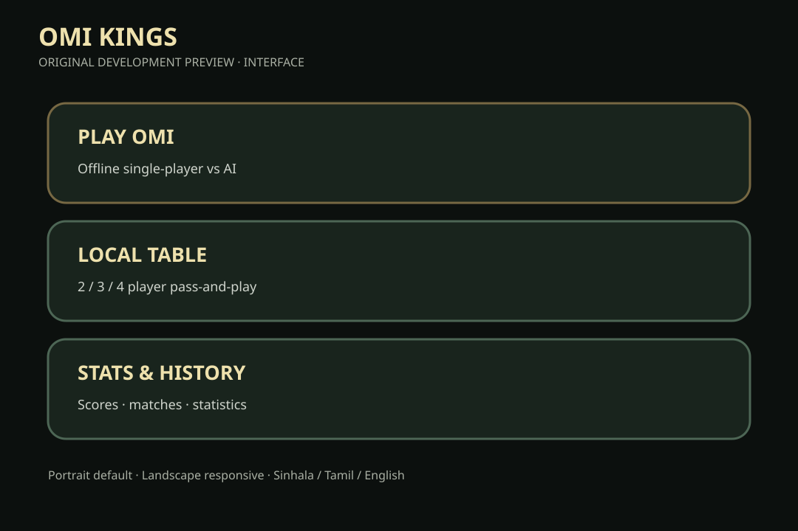
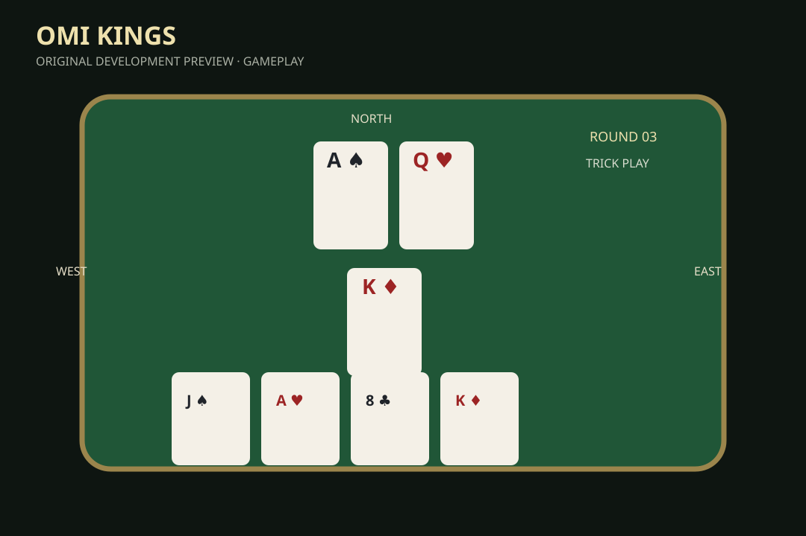

RSS GAMES · GAME PROJECT 02
Omi Kings
Sri Lankan Omi card game for Android.
Verified project scope
The RSS project record describes a shared rules engine, offline AI, local 2/3/4-player pass-and-play, scoring and statistics, with an online 2v2 roadmap, profiles, rankings and Sinhala / Tamil / English support.
Development
Ongoing game development. The website does not present the project as a released product.

